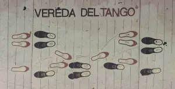

Le tango : la danse qui se promène
Le tango argentin se résume à une marche à deux. Oubliez les clichés éculés. J'enseigne à Bruxelles chez BE-TANGO depuis 2007, et la caminata est le premier élément sur lequel nous travaillons. Nous la décomposons, transférons le poids au sol avec une intention précise. C'est le cœur du tango. Maîtrisez la marche, et vous saurez danser.
Vient ensuite la parada : la pause. L'arrêt. Un moment suspendu où la connexion persiste. L'orchestre en décide. Un Tanturi vous arrache des larmes avec des pas lents et profondément ancrés. Un D'Arienzo vous fouette les mollets avec un rythme sec et nerveux. La musique est le maître.
Le tango est une discussion silencieuse. Deux corps qui s'écoutent marcher sur la piste.
L'émotion ne provient jamais d'acrobaties artificielles. Elle naît du contraste permanent entre la marche et l'arrêt, dans l'intimité de l'abrazo.
Percevez cette différence : la fausse joie de Mis Pesares d'Edgardo Donato (1940) face à la mélancolie brute de Recién par Ricardo Tanturi (1944).
La valse : légèreté et mouvement circulaire
Comment aborder la valse tango, ou vals criollo ? En ne s'interrompant jamais. Le rythme en trois temps vous emporte dans un mouvement circulaire continu. Adieu le drame et les pauses suspendues du tango. Le vals tourne, glisse et respire la légèreté.
La mécanique diffère. Je le répète à mes élèves : donnez une petite impulsion sur le premier temps de chaque mesure. C'est la clé. Cette impulsion initiale procure une sensation de flottement, comme si la gravité s'estompait.
L'abrazo demeure, mais l'énergie s'allège. Lancez une tanda de vals lors de notre pratique hebdomadaire à Ixelles, et les sourires s'épanouiront. Le vals libère instantanément.
Besoin d'une illustration ? Écoutez l'incontournable Pasión de Juan D'Arienzo (1937) et voyez si vous parvenez à rester assis.
La milonga : rapidité et rythme syncopé
La milonga (la danse, et non le lieu) est la cousine hyperactive du tango. Son secret réside dans le traspié : un pas syncopé, un trébuchement maîtrisé. Un véritable coup de fouet sur la piste.
Ici, le temps manque pour la poésie. Tout s'accélère. Mon conseil au studio : ne transférez jamais votre poids à 100%. Maintenez-le entre vos deux appuis. Cela permet de dégainer des pas vifs, de rebondir et de jouer avec le sol.
La milonga est un tango débridé. Vif, taquin et ancré.
Si le tango relève d'un aveu intime, la milonga s'apparente à une plaisanterie entre amis au bar d'une milonga bruxelloise. Elle exige des pieds agiles et de la réactivité, mais procure une joie intense. Une fois le mécanisme assimilé, l'addiction guette. Nombre de mes danseurs avancés ne jurent plus que par elle.
Pour ressentir le rythme, écoutez la fondatrice Milonga Sentimental de Francisco Canaro (1933) ou la frénétique Milonga del 83 de Juan D'Arienzo (1940).
Les pas de danse : les mêmes, mais différents
Faut-il apprendre trois danses distinctes ? Non. C'est ce qui rassure mes élèves dès le départ. Les mêmes pas de base servent au tango, au vals et à la milonga. La salida, les ochos, les giros : le vocabulaire reste identique. Seul l'accent change.
Bien sûr, des habitudes se prennent. On privilégiera les giros pour alimenter le tourbillon d'un vals. On insistera sur des paradas dramatiques dans un tango. On raccourcira la foulée pour la milonga. Mais, au final, la musique guide le mouvement, jamais une chorégraphie préétablie.
Chez BE-TANGO, nous insistons sur l'écoute musicale dès le premier cours. La technique pure s'acquiert par la pratique. Mais discerner si la musique appelle à la course ou à la suspension... Voilà ce qui fait un vrai tanguero.

Le paradoxe émotionnel : quand la joie cache la tristesse
Pourquoi la musique de tango nous étreint-elle ainsi ? En raison de son paradoxe émotionnel. Sur la piste, la mélodie rebondit, la cadence invite à l'envol, le sourire affleure. Puis, on prête l'oreille à las letras. Et là, la trahison, l'amour perdu et la nostalgie des vieux quartiers se révèlent.
Ce contraste permanent entre un rythme pétillant et des mots poignants me saisit depuis 2007. Prenez un vals : vous tournoyez avec une légèreté inouïe, tandis que le chanteur déplore une rupture. Cette dualité confère à la danse une profondeur singulière.
C'est pourquoi cette culture reste inégalée. Que vous marchiez un tango, tournoyiez un vals ou trébuchiez une milonga, vous dansez la vie entière en trois minutes, ici à Bruxelles comme de l'autre côté de l'Atlantique.
Comment danser chaque rythme : différences de technique
Chacun de ces magnifiques rythmes de tango – tango, valse et milonga – exige une approche légèrement différente. En tango, tout est question de pause. Accueillez l'immobilité, laissez la musique respirer et utilisez cet espace pour vous connecter avec votre partenaire et l'émotion de la musique. Ne vous précipitez pas ! Pensez à la *caminata*, la marche, et à la façon dont vous pouvez utiliser de subtils changements de poids et d'énergie pour créer de la tension et du relâchement.
La valse, en revanche, est un flux continu. Imaginez que vous glissez sur la piste de danse en un cercle gracieux. Il n'y a presque pas d'arrêt. Le défi consiste à maintenir ce flux tout en restant connecté à votre partenaire et au rythme 1-2-3 de la musique. Pensez à de légères impulsions, une douce poussée et traction qui vous maintient en mouvement. Ne vous enfermez pas dans des schémas rigides ; laissez la musique vous guider.
La milonga est l'endroit où les choses deviennent ludiques et un peu impertinentes ! Elle exige une légèreté et une agilité différentes du tango. Concentrez-vous sur de petits pas vifs et sur le *traspié*. Ce pas décalé ajoute un rythme syncopé qui est incroyablement amusant à danser, mais qui demande de la pratique pour être maîtrisé. Pensez à des changements de direction rapides et à une énergie espiègle. C'est certainement le plus exigeant des trois, mais aussi le plus gratifiant quand on réussit. Vous pouvez voir comment le *traspié* s'intègre dans le paysage plus large de la milonga sur cet article.
Enregistrements essentiels : une playlist pour chaque rythme
Pour vraiment comprendre le tango, la valse et la milonga, il faut écouter ! Voici quelques enregistrements essentiels pour vous lancer, et ce que je vous suggère d'écouter :
Tango :
- Orquesta Típica Victor, "La Tablada" (1928) : Un exemple classique de tango ancien, parfait pour comprendre les rythmes fondamentaux. Écoutez l'interaction entre le bandonéon et le violon.
- Carlos Di Sarli, "Bahia Blanca" (1956) : La musique de Di Sarli est élégante et puissante. Remarquez comment les pauses sont utilisées pour créer une tension dramatique.
- Aníbal Troilo avec Roberto Goyeneche, "Garúa" (1943) : La voix de Goyeneche capture parfaitement l'esprit mélancolique du tango. Faites attention à la façon dont l'orchestre soutient le chant.
Valse :
- Juan D'Arienzo, "Desde el Alma" (1938) : Les valses de D'Arienzo sont rapides et énergiques. Concentrez-vous sur le rythme clair 1-2-3 et le rythme entraînant.
- Osvaldo Pugliese, "La Yumba" (1946) : Pugliese apporte une ambiance plus dramatique et théâtrale à la valse. Écoutez les changements dynamiques et l'utilisation expressive de l'orchestre.
- Ricardo Tanturi, "Una Emoción" (1941) : Une belle valse avec une mélodie romantique. Faites attention aux transitions douces et à la qualité fluide de la musique.
Milonga :
- Francisco Canaro, "Milonga Sentimental" (1936) : Les milongas de Canaro sont ludiques et légères. Écoutez les rythmes syncopés et les changements de tempo rapides.
- Juan D'Arienzo, "Milonga del 83" (1951) : Les milongas de D'Arienzo sont rapides et furieuses ! Essayez d'identifier le rythme du *traspié* dans la musique.
- Rodolfo Biagi, "Humoristico" (1940) : Les milongas de Biagi ont un son distinctif, caractérisé par son jeu de piano staccato.
Quand apprend-on la valse et la milonga dans les cours de tango ?
Chez BE-TANGO ici à Bruxelles, nous introduisons généralement les différents rythmes de manière structurée pour vous aider à construire une base solide. Nous pensons qu'il est essentiel de commencer par le tango. Vous passerez les premiers mois (généralement 1 à 3) à vous concentrer sur les pas fondamentaux, l'abrazo et la façon de vous connecter à la musique. Cela vous donne les compétences de base dont vous avez besoin pour progresser.
La valse suit généralement, vers les mois 3 à 6. À ce stade, vous serez à l'aise avec la marche et l'abrazo de base du tango, et vous serez prêt à explorer les mouvements fluides et circulaires de la valse. Elle s'appuie sur vos compétences de tango existantes, vous mettant au défi de maintenir la connexion et l'équilibre tout en vous déplaçant continuellement. Si vous souhaitez en savoir plus sur le temps qu'il faut pour apprendre le tango, consultez cet article.
La milonga est généralement introduite plus tard, après environ 6 mois ou plus d'expérience du tango. C'est le plus complexe rythmiquement des trois, et il nécessite une bonne compréhension de la technique et de la musicalité du tango. L'introduire trop tôt peut être accablant. Considérez-la comme le cours avancé ! Cette approche progressive vous aide à développer une compréhension complète du tango argentin. Découvrez nos cours de tango pour débutants à Bruxelles.
Foire aux questions
Puis-je danser la valse lors d'une milonga ?
Absolument ! Une soirée de milonga typique à Bruxelles comprendra des séries de musique de tango, de valse et de milonga. Habituellement, les DJs les jouent en *tandas* – des séries de 3-4 chansons du même rythme, suivies d'une *cortina* (une courte chanson non-tango) pour signaler la fin de la série et une chance de changer de partenaire.
Pourquoi la milonga est-elle si difficile ?
La milonga est difficile en raison de sa vitesse et de ses rythmes syncopés. Le *traspié* exige un jeu de jambes précis et un bon sens du timing. Elle exige également un niveau d'énergie et d'agilité plus élevé que le tango ou la valse. Mais ne vous laissez pas décourager – c'est incroyablement amusant une fois qu'on s'y habitue !
La valse est-elle plus facile que le tango ?
Pas nécessairement. La valse exige un type de compétence différent. Bien que les pas eux-mêmes puissent sembler plus simples que certaines figures de tango, maintenir le flux continu et la connexion avec votre partenaire peut être assez difficile. Cela dépend vraiment de vos forces individuelles et de votre style d'apprentissage.
Que joue un DJ lors d'une soirée de milonga typique ?
Un bon DJ de milonga organisera une sélection de musique dansante et engageante, créant un bon équilibre et un bon flux tout au long de la soirée. Vous pouvez vous attendre à entendre un mélange d'orchestres de tango classiques comme D'Arienzo, Di Sarli, Troilo et Pugliese, ainsi que des séries de valses et de milongas pour que les choses restent intéressantes. Le DJ tiendra également compte de l'ambiance et de l'énergie des danseurs lors de la sélection de la musique.
Sur quel rythme les débutants doivent-ils se concentrer ?
Les débutants doivent absolument se concentrer d'abord sur le tango. Maîtriser la marche de base, l'abrazo et les pas fondamentaux du tango fournira une base solide pour apprendre la valse et la milonga plus tard. Essayer d'apprendre les trois en même temps peut être accablant. Considérez le tango comme la base sur laquelle vous construisez votre maison de tango. Vous pouvez également lire sur l'histoire du tango argentin sur notre blog.